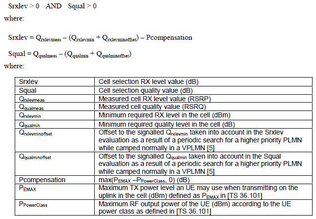
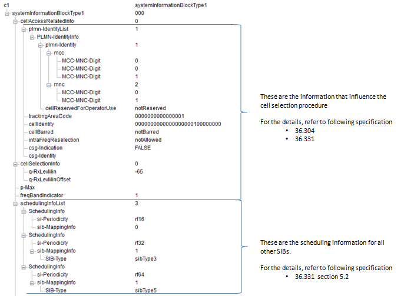
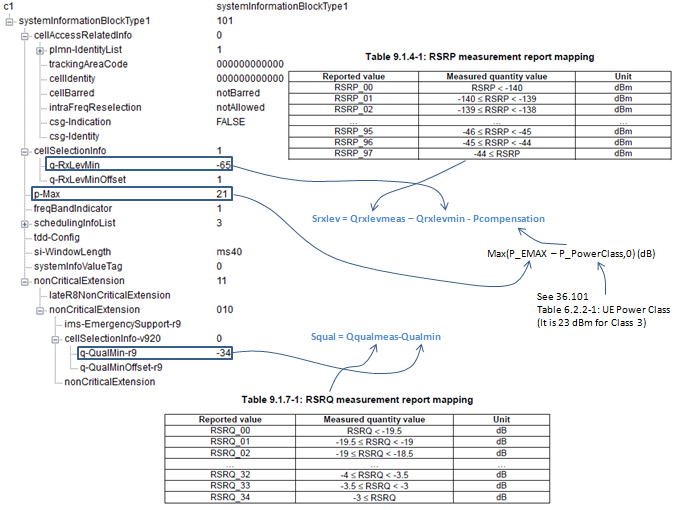

|
LTE Quick Reference Go Back To Index Home : www.sharetechnote.com |
|
|
Note : See "Idle Mode Procedure" section first for the big picture.
The term 'Cell Selection Criterion' may be a vague expression, since there can be many different criteria from many different perspective. In broad sense, cell selection would be influenced by following factors.
i) Is the cell transmitting power strong enough to be recognized/detected by the UE ? (Signal Strength/Quality Criteria) ii) Is the PLMN of the cell acceptable to the UE ? (PLMN selection criteria) iii) Is the service type of the cell acceptable to the UE ? (Service Type criteria)
But in most of the situation when we say "Cell Selection Criteria", it is likely to say the first criteria (Signal Strength/Quality Criteria). This signal quality criterion as descrbed in 36.304 as follows.
According to this criterion, UE would not start registration even though it sucessfully detected a cell and even decoded MIB and SIBs unless the Srxleve > 0 and Squal > 0. So if a device does not even initiate the PRACH process even when it successfully decoded all the MIB and SIBs, checking on this criteria would be a good first step for the troubleshooting. (Of course, this is not the only issues for this case. there may be USIM issue and Band Indicator Issue, PLMN issues etc).

Out of the variables used in the equation, only Qrxlevmeas and Qqualmeas is the value UE really measures when it turns on and most of other parameters are determined by a specific SIB (SIB1 in LTE case) or calculated by some other predefined values.
Following is the part of LTE SIB1 which is related to Cell Selection Criterion and Cell Selection Procedure. Following is overall information and functionality of SIB1 information element.

Now you may have a couple of questions of q-RxLevMin. The first question of what kind of power this represents ? Is it RSSI or RSRP or RSRQ ? How the value of this IE maps to real power value (dBm) ? You can get the answers to these two questions at once from 36.331.
36.331 has a description as follows. – Q-RxLevMin The IE Q-RxLevMin is used to indicate for cell re-selection the required minimum received RSRP level in the (EUTRA) cell. Corresponds to parameter Qrxlevmin in 36.304 [4]. Actual value Qrxlevmin = IE value * 2 [dBm].
q-RxLevMinOffset
Parameter Qrxlevminoffset in 36.304 [4]. Actual value Qrxlevminoffset = IE value * 2 [dB]. If absent, apply the (default) value of 0 [dB] for Qrxlevminoffset. Affects the minimum required Rx level in the cell.
In summary, the cell selection criteria (Signal Strength/Quality Criteria) can be illustrated as follows.

|